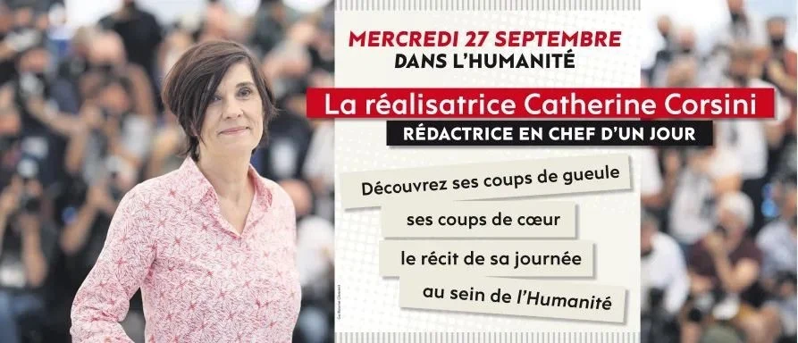

Publication sur X
Catherine Corsini et La Fracture. Une annonce de L’Humanité
Date de publication sur X · 27 octobre 2021
Repères éditoriaux
L’annonce et le visuel indiquent « mercredi 27 septembre ». Le CNC date la sortie française du film du mercredi 27 octobre 2021, date de publication du message sur X. La date du numéro annoncé reste à documenter.
Texte de la publication sur X
Catherine CORSINI, réalisatrice de "La Fracture", sera la rédactrice en chef d'un jour dans L'Humanité du mercredi 27 septembre
Avec La Fracture, en salles demain, Catherine CORSINI signe l'électrochoc cinématographique de cet automne. https://t.co/AqlOhD6AYH

Sources
PCF 79 · @79Parti sur X · AR-0005-TW-1453333779003715586
À lire aussi · Pass culture, non à la punition collective ! · Le lien d’origine
Publications associées
- Catherine CORSINI, réalisatrice de "La Fracture", sera la rédactrice en chef d'un jour dans L'Humanité du… · Même annonce relayée sur Facebook